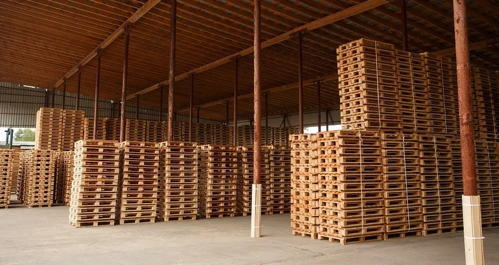

ТверьПроизводство упаковки
Kaspack
Полный цикл digital-продвижения для производителя упаковочных материалов «Kaspack»: сайт-витрина производства, B2B-реклама и прозрачный учёт заявок.
Боли клиента
- Устаревший сайт не отражал производственные мощности
- Реклама не работала на нужную аудиторию (оптовики, производители)
- Невозможно было отследить, какие каналы приносят заказы
Решение
- Сайт как витрина производства с техническими характеристиками
- Специализированный B2B-таргетинг
- Прозрачная система учёта заявок
Проделанные работы
- Разработка сайта
- Адаптивный дизайн под ПК, планшеты и смартфоны
- Первичная SEO-оптимизация, формы заказа и обратного звонка
- Интеграция с CRM для учёта заявок
- Яндекс Директ
- Анализ конкурентов и аудит проекта
- Стратегия и медиапланирование, сбор семантического ядра
- Создание кампаний, A/B-тестирование, мониторинг и отчётность
- Яндекс Бизнес
- Заполнение карточки, фото, рекламная подписка
- Ведение карточки, работа с репутацией и отзывами
- Внедрение
- Интеграция с CRM и каналами, отслеживание звонков и заявок
- Расчёт ROI и настройка сквозной аналитики
Выводы
- Сайт стал основным каналом привлечения оптовых клиентов
- Увеличил средний чек за счёт комплексных решений
- Снизил нагрузку на отдел продаж за счёт автоматизации
Результаты в цифрах
+150%
заявок от B2B-клиентов
−60%
стоимость лида (CPL)
ROI 520%
рекламы
35%
клиентов сделали повторный заказ
Разработка сайтаЯндекс ДиректЯндекс БизнесСквозная аналитика